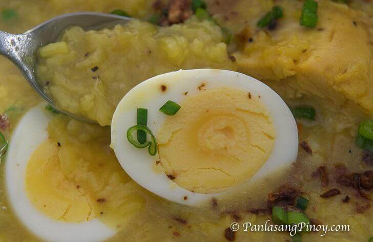

Arroz Caldo

Ingredients
- 1 ½ lbs chicken cut into serving pieces
- 1 ½ cups rice uncooked
- 34 ounces water about 1 liter
- 2 Tablespoons fish sauce
- 1 teaspoon garlic
- 1/4 teaspoon ground black pepper
- 1 cup onion minced
- 4 eggs hard boiled
- 1 cup scallions green onions, minced
- 2 knobs ginger julienned
- 3 tbsp safflower kasubha
- 1 chicken cube bouillon
- 1 lemon or 4 pieces calamansi
- 2 Tablespoon cooking oil
Instructions
- In a pot, heat the cooking oil then saute the garlic, onion, and ginger
- Dash-in some ground black pepper
- Add the chicken cube and cook until the cube melts
- Put-in the chicken and cook until outer layer color turns golden brown
- Add the fish sauce and uncooked rice then mix and cook for a few minutes
- Pour-in the water and bring to a boil
- Stir occasionally and simmer until the rice is fully cooked (about 30 to 40 minutes)
- Put-in the hard boiled eggs
- Add the safflower for additional color and aroma
- Serve hot with garlic, minced scallions, and lemon. Share and Enjoy!